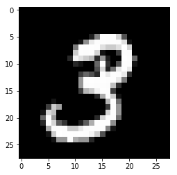
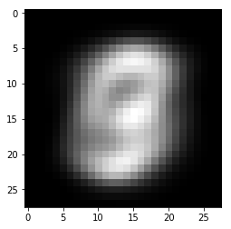

Dask and Tensorflow¶
See http://matthewrocklin.com/blog/work/2017/02/11/dask-tensorflow for more.
In [1]:
%matplotlib inline
In [2]:
import dask.array as da
from dask import delayed
from dask_tensorflow import start_tensorflow
from distributed import Client, progress, get_worker, worker_client, Queue
import dask.dataframe as dd
import matplotlib.pyplot as plt
import tensorflow as tf
In [3]:
client = Client(n_workers=3, memory_limit='2GB')
client
Out[3]:
Client
|
Cluster
|
In [4]:
def get_mnist():
from tensorflow.examples.tutorials.mnist import input_data
mnist = input_data.read_data_sets('/tmp/mnist-data', one_hot=True)
return mnist.train.images, mnist.train.labels
get_mnist() # Download the data ahead of time
# Scale up: increase the number of copies of the dataset
n_copies = 2
datasets = [delayed(get_mnist)() for i in range(n_copies)]
images = [d[0] for d in datasets]
labels = [d[1] for d in datasets]
images = [da.from_delayed(im, shape=(55000, 784), dtype='float32') for im in images]
labels = [da.from_delayed(la, shape=(55000, 10), dtype='float32') for la in labels]
images = da.concatenate(images, axis=0)
labels = da.concatenate(labels, axis=0)
WARNING:tensorflow:From <ipython-input-4-c0c069b1b935>:3: read_data_sets (from tensorflow.contrib.learn.python.learn.datasets.mnist) is deprecated and will be removed in a future version.
Instructions for updating:
Please use alternatives such as official/mnist/dataset.py from tensorflow/models.
WARNING:tensorflow:From /home/travis/miniconda/envs/dask-ml/lib/python3.6/site-packages/tensorflow/contrib/learn/python/learn/datasets/mnist.py:260: maybe_download (from tensorflow.contrib.learn.python.learn.datasets.base) is deprecated and will be removed in a future version.
Instructions for updating:
Please write your own downloading logic.
WARNING:tensorflow:From /home/travis/miniconda/envs/dask-ml/lib/python3.6/site-packages/tensorflow/contrib/learn/python/learn/datasets/base.py:252: _internal_retry.<locals>.wrap.<locals>.wrapped_fn (from tensorflow.contrib.learn.python.learn.datasets.base) is deprecated and will be removed in a future version.
Instructions for updating:
Please use urllib or similar directly.
Successfully downloaded train-images-idx3-ubyte.gz 9912422 bytes.
WARNING:tensorflow:From /home/travis/miniconda/envs/dask-ml/lib/python3.6/site-packages/tensorflow/contrib/learn/python/learn/datasets/mnist.py:262: extract_images (from tensorflow.contrib.learn.python.learn.datasets.mnist) is deprecated and will be removed in a future version.
Instructions for updating:
Please use tf.data to implement this functionality.
Extracting /tmp/mnist-data/train-images-idx3-ubyte.gz
Successfully downloaded train-labels-idx1-ubyte.gz 28881 bytes.
WARNING:tensorflow:From /home/travis/miniconda/envs/dask-ml/lib/python3.6/site-packages/tensorflow/contrib/learn/python/learn/datasets/mnist.py:267: extract_labels (from tensorflow.contrib.learn.python.learn.datasets.mnist) is deprecated and will be removed in a future version.
Instructions for updating:
Please use tf.data to implement this functionality.
Extracting /tmp/mnist-data/train-labels-idx1-ubyte.gz
WARNING:tensorflow:From /home/travis/miniconda/envs/dask-ml/lib/python3.6/site-packages/tensorflow/contrib/learn/python/learn/datasets/mnist.py:110: dense_to_one_hot (from tensorflow.contrib.learn.python.learn.datasets.mnist) is deprecated and will be removed in a future version.
Instructions for updating:
Please use tf.one_hot on tensors.
Successfully downloaded t10k-images-idx3-ubyte.gz 1648877 bytes.
Extracting /tmp/mnist-data/t10k-images-idx3-ubyte.gz
Successfully downloaded t10k-labels-idx1-ubyte.gz 4542 bytes.
Extracting /tmp/mnist-data/t10k-labels-idx1-ubyte.gz
WARNING:tensorflow:From /home/travis/miniconda/envs/dask-ml/lib/python3.6/site-packages/tensorflow/contrib/learn/python/learn/datasets/mnist.py:290: DataSet.__init__ (from tensorflow.contrib.learn.python.learn.datasets.mnist) is deprecated and will be removed in a future version.
Instructions for updating:
Please use alternatives such as official/mnist/dataset.py from tensorflow/models.
In [5]:
images, labels = client.persist([images, labels])
In [6]:
im = images[1].compute().reshape((28, 28))
plt.imshow(im, cmap='gray')
Out[6]:
<matplotlib.image.AxesImage at 0x2b8264c9fda0>

In [7]:
im = images.mean(axis=0).compute().reshape((28, 28))
plt.imshow(im, cmap='gray')
Out[7]:
<matplotlib.image.AxesImage at 0x2b8267184f28>

In [8]:
images = images.rechunk((10000, 784))
labels = labels.rechunk((10000, 10))
images = images.to_delayed().flatten().tolist()
labels = labels.to_delayed().flatten().tolist()
batches = [delayed([im, la]) for im, la in zip(images, labels)]
batches = client.compute(batches)
In [9]:
tf_spec, dask_spec = start_tensorflow(client, ps=1, worker=1, scorer=1)
In [10]:
import math
import tempfile
import time
from queue import Empty
IMAGE_PIXELS = 28
hidden_units = 100
learning_rate = 0.01
sync_replicas = False
replicas_to_aggregate = len(dask_spec['worker'])
In [11]:
def model(server):
worker_device = "/job:%s/task:%d" % (server.server_def.job_name,
server.server_def.task_index)
task_index = server.server_def.task_index
is_chief = task_index == 0
with tf.device(tf.train.replica_device_setter(
worker_device=worker_device,
ps_device="/job:ps/cpu:0",
cluster=tf_spec)):
global_step = tf.Variable(0, name="global_step", trainable=False)
# Variables of the hidden layer
hid_w = tf.Variable(
tf.truncated_normal(
[IMAGE_PIXELS * IMAGE_PIXELS, hidden_units],
stddev=1.0 / IMAGE_PIXELS),
name="hid_w")
hid_b = tf.Variable(tf.zeros([hidden_units]), name="hid_b")
# Variables of the softmax layer
sm_w = tf.Variable(
tf.truncated_normal(
[hidden_units, 10],
stddev=1.0 / math.sqrt(hidden_units)),
name="sm_w")
sm_b = tf.Variable(tf.zeros([10]), name="sm_b")
# Ops: located on the worker specified with task_index
x = tf.placeholder(tf.float32, [None, IMAGE_PIXELS * IMAGE_PIXELS])
y_ = tf.placeholder(tf.float32, [None, 10])
hid_lin = tf.nn.xw_plus_b(x, hid_w, hid_b)
hid = tf.nn.relu(hid_lin)
y = tf.nn.softmax(tf.nn.xw_plus_b(hid, sm_w, sm_b))
cross_entropy = -tf.reduce_sum(y_ * tf.log(tf.clip_by_value(y, 1e-10, 1.0)))
opt = tf.train.AdamOptimizer(learning_rate)
if sync_replicas:
if replicas_to_aggregate is None:
replicas_to_aggregate = num_workers
else:
replicas_to_aggregate = replicas_to_aggregate
opt = tf.train.SyncReplicasOptimizer(
opt,
replicas_to_aggregate=replicas_to_aggregate,
total_num_replicas=num_workers,
name="mnist_sync_replicas")
train_step = opt.minimize(cross_entropy, global_step=global_step)
if sync_replicas:
local_init_op = opt.local_step_init_op
if is_chief:
local_init_op = opt.chief_init_op
ready_for_local_init_op = opt.ready_for_local_init_op
# Initial token and chief queue runners required by the sync_replicas mode
chief_queue_runner = opt.get_chief_queue_runner()
sync_init_op = opt.get_init_tokens_op()
init_op = tf.global_variables_initializer()
train_dir = tempfile.mkdtemp()
if sync_replicas:
sv = tf.train.Supervisor(
is_chief=is_chief,
logdir=train_dir,
init_op=init_op,
local_init_op=local_init_op,
ready_for_local_init_op=ready_for_local_init_op,
recovery_wait_secs=1,
global_step=global_step)
else:
sv = tf.train.Supervisor(
is_chief=is_chief,
logdir=train_dir,
init_op=init_op,
recovery_wait_secs=1,
global_step=global_step)
sess_config = tf.ConfigProto(
allow_soft_placement=True,
log_device_placement=False,
device_filters=["/job:ps", "/job:worker/task:%d" % task_index])
# The chief worker (task_index==0) session will prepare the session,
# while the remaining workers will wait for the preparation to complete.
if is_chief:
print("Worker %d: Initializing session..." % task_index)
else:
print("Worker %d: Waiting for session to be initialized..." %
task_index)
sess = sv.prepare_or_wait_for_session(server.target, config=sess_config)
if sync_replicas and is_chief:
# Chief worker will start the chief queue runner and call the init op.
sess.run(sync_init_op)
sv.start_queue_runners(sess, [chief_queue_runner])
return sess, x, y_, train_step, global_step, cross_entropy
In [12]:
def ps_task():
worker = get_worker()
worker.tensorflow_server.join()
In [13]:
def scoring_task():
with worker_client() as c:
# Scores Channel
scores = Queue('scores')
# Make Model
worker = get_worker()
server = worker.tensorflow_server
sess, x, y_, _, _, cross_entropy = model(server)
# Testing Data
from tensorflow.examples.tutorials.mnist import input_data
mnist = input_data.read_data_sets('/tmp/mnist-data', one_hot=True)
test_data = {x: mnist.validation.images,
y_: mnist.validation.labels}
# Main Loop
while True:
score = sess.run(cross_entropy, feed_dict=test_data)
scores.put(float(score))
time.sleep(1)
In [14]:
def worker_task():
with worker_client() as c:
scores = Queue('scores')
num_workers = replicas_to_aggregate = len(dask_spec['worker'])
worker = get_worker()
server = worker.tensorflow_server
tf_queue = worker.tensorflow_queue
# Make model
sess, x, y_, train_step, global_step, _= model(server)
# Main loop
sc = scores.get()
while not scores or sc > 1000:
try:
batch = tf_queue.get(timeout=0.5)
except Empty:
continue
train_data = {x: batch[0],
y_: batch[1]}
sess.run([train_step, global_step], feed_dict=train_data)
In [15]:
ps_tasks = [client.submit(ps_task, workers=worker)
for worker in dask_spec['ps']]
worker_tasks = [client.submit(worker_task, workers=addr, pure=False)
for addr in dask_spec['worker']]
scorer_task = client.submit(scoring_task, workers=dask_spec['scorer'][0])
In [16]:
def transfer_dask_to_tensorflow(batch):
worker = get_worker()
worker.tensorflow_queue.put(batch)
In [17]:
scores = Queue('scores')
score = scores.get()
while score > 1000:
print(score)
dump = client.map(transfer_dask_to_tensorflow, batches,
workers=dask_spec['worker'], pure=False)
score = scores.get()
11536.9833984375
2672.248046875
1636.2916259765625
1422.4263916015625
1253.713623046875
1079.1396484375